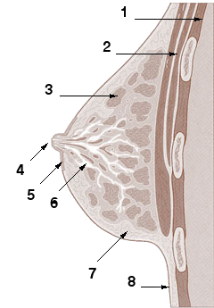

Simptoma = ndjesi e raportuar nga pacienti Shenja = e vëzhgueshme/matshme nga mjeku Ethe: temperaturë ≥ 38 °C Dhimbja vlerësohet 0–10 (VAS/NRS) Anamneza: fillimi, kohëzgjatja, intensiteti, faktorët rënduese/lehtësuese